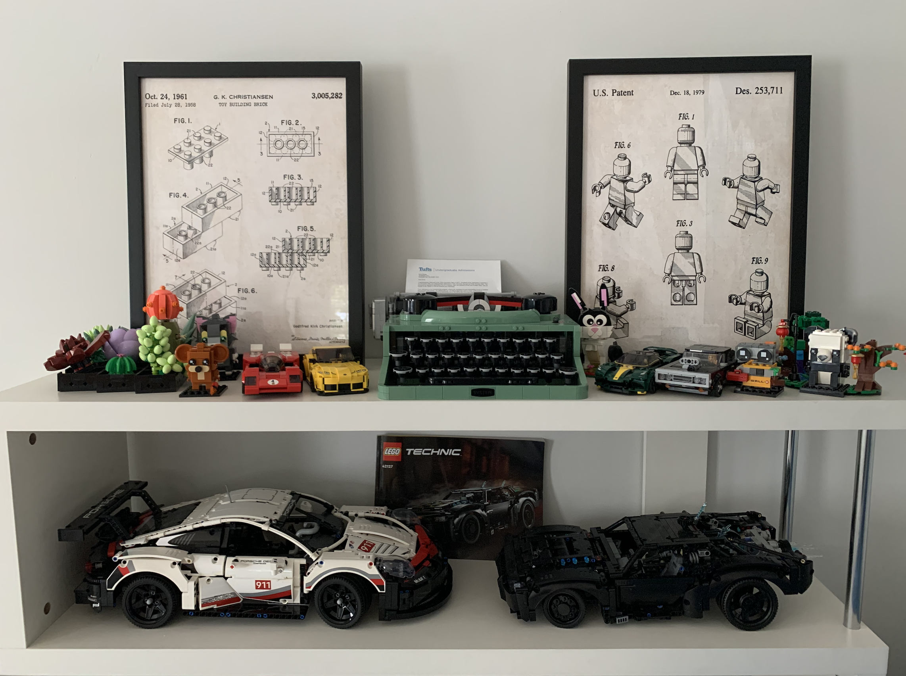
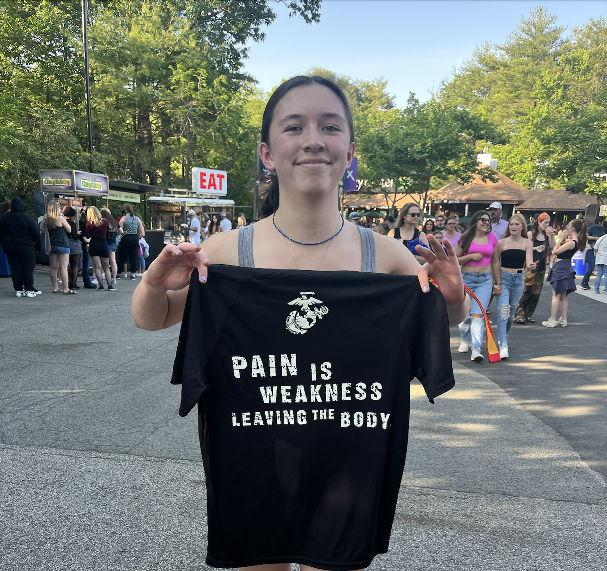

Nothing is more fun than trying to play basketball in ridiculous costumes for Halloween

It's like solving a puzzle with your body

"What If?" by Randall Munroe, "The Da Vinci Code" by Dan Brown, "1984" by George Orwell, and "The Song of Achilles" by Madeline Miller.

Wether it's starting a FIRST LEGO League team for my middle school or shopping for a new set, count me in!

Thank you, lifting. I would not have been able to do 25 pushups to win this awesome shirt without you.

The most absurd and amazing show ever. I wrote a research paper about the philosophical themes in this show, which you can find here

"There are a lot of fads, blogs and strong opinions, but then there's SCIENCE."
Listen here

Galdes, park, groomed trails... You name it, I've definetly face planted on it

You never realize how hard it is to swim straight until the black line of the indoor pool is replaced by the nothingness of the ocean. Beware of sharks!

With a co-leader, led 8 first-years on a 5 day backpacking trip in southern Vermont. The key to hiking fast... singing!